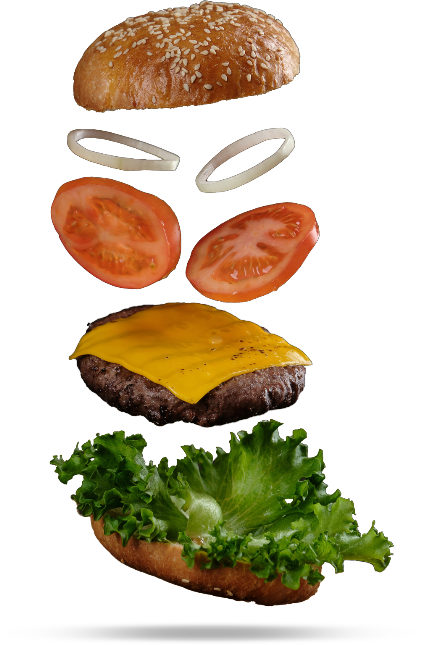

<div class="flex ml-[4.9%]" >
    <div class=" text-white font-b  old text-5xl mt-[15%]">
        <div class="flex " style="font-family: 'Jua', sans-serif;">
            Why 
        
         o      out     when  , 
        </div>
        <div style="font-family: 'Jua', sans-serif;"> you      can      Grubz       in</div>
        <div class="mt-[10%]">
            <app-searchbar ></app-searchbar>
        </div>
        <div class="mt-[13%]">
            <app-restaurantuser></app-restaurantuser>
        </div>
    </div>
    

</div>